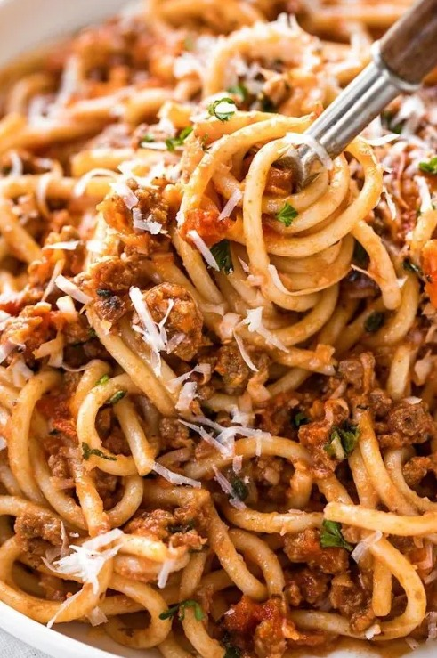

Home
Pasta

Simple Protein Pasta
A simple and classic spaghetti with red sauce that never gets
old! Add a protein such as ground beef, ground turkey, or sausage
to make it even more delectable. This recipe is perfect for college
students and anyone who is on a tight budget.
All you will need is pasta, tomato sauce, a protein, parmesan, a pot,
a pan, and a stove. It's really that simple!
Ingredients
- 1 box or bag of spaghetti
- 1 jar of tomato sauce
- 1 lb of ground protein of choice or 2-3 sausage links
- parmesan to garnish
- salt
- pepper
Steps
- Cook the pasta until tender.
- While pasta is cooking, in a separate pan, cook ground protein until compeltely browned.
If cooking sausage, slice into bite-sized pieces and then brown them in pan.
- Add salt and pepper to taste
- After protein is cooked, add jar of tomato sauce to the same pan as meat. Cook until sauce starts to bubble.
- Drain cooked pasta and combine with meat sauce. Serve and garnish with some parmesan.